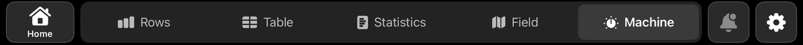

Zurechtfinden in der App — die obere Leiste und der Seitenring
Die fünf Seiten der Hectare-App auf einem Ring, die obere Leiste des iPad, die Tab-Leiste des iPhone und was „Start“ öffnet.
Die App hat fünf Seiten — „Reihen“, „Tabelle“, „Statistik“, „Feld“ und „Maschine“ — und zwei Orte, die keine Seiten sind: die Liste der „Alarme“ und die „Einstellungen“.
Die obere Leiste auf dem iPad

- „Start“ — öffnet den Startbildschirm des Tabs „Aussaat“, standardmäßig „Reihen“. Was sie öffnet, stellen Sie unter „Einstellungen“ › „App“ › „Startbildschirm des Tabs ‚Aussaat‘“ ein.
- Die fünf Seiten. Tippen Sie auf eine, um sie zu öffnen. Die Reiter stehen immer in derselben Reihenfolge.
- Die Seite auf dem Bildschirm — ihr Reiter leuchtet.
- „Alarme“ — die Liste der Alarme, die gerade aktiv sind. Die Glocke ist rot mit einer Zahl, wenn Alarme aktiv sind: die Zahl der Reihen, Geräte und Verbindungen im Alarm. Tippen Sie erneut darauf, um zur vorherigen Seite zurückzukehren.
- „Einstellungen“ — tippen Sie erneut darauf, um zur vorherigen Seite zurückzukehren.
Der Seitenring
Die Seiten stehen auf einem Ring. Wischen Sie nach links, um zur nächsten Seite zu gehen, nach rechts, um zurückzugehen: „Reihen“ → „Tabelle“ → „Statistik“ → „Feld“ → „Maschine“ → wieder „Reihen“. Ein Wisch muss eine deutliche seitliche Bewegung sein; Drücken und Ziehen auf einer Seite (die Überwachungslinie, eine Reihe) blättert nicht um.
Die Tab-Leiste auf dem iPhone
Auf einem iPhone — und auf einem iPad, wenn die App nur einen schmalen Teil des Bildschirms hat — ersetzt eine Tab-Leiste am unteren Bildschirmrand mit vier Reitern die obere Leiste:
| Reiter | Was er enthält |
|---|---|
| „Aussaat“ | Den Ring „Reihen“ → „Tabelle“ → „Statistik“ → „Feld“, per Wisch gedreht; Punkte unter der Seite zeigen, wo Sie sind. Tippen Sie erneut auf den leuchtenden Reiter, um zur Startseite zu gehen. |
| „Maschine“ | Die Seite „Maschine“. |
| „Alarme“ | Die Liste der aktiven Alarme, mit der Zahl der Alarme auf dem Reiter. |
| „Einstellungen“ | Die Einstellungen. |
Was über jeder Seite liegt
Welche Seite auch geöffnet ist, drei Dinge können darüber erscheinen: das Alarmfenster (Das Alarmfenster), eine rote Kapsel zur Verbindung mit dem Gateway und eine gelbe Kapsel zum Ton (Meldungen über dem Bildschirm).
Die Liste der Alarme
„Alarme“ zeigt eine Zeile je Alarmart, mit den Reihen oder Geräten, die sie betrifft — dieselben Worte wie das Alarmfenster. Ist nichts aktiv, steht dort „Keine aktiven Alarme“. Vergangene Alarme werden nicht gespeichert.
Ihre Maschine tut etwas, das diese Seite nicht beantwortet? Schreiben Sie an support@agriwelt.com — es antwortet ein Ingenieur.